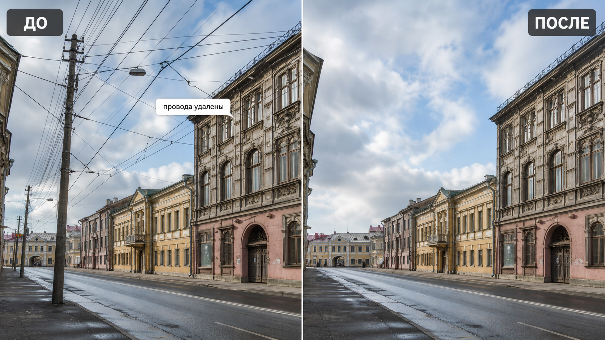

Промтзилла
Провода и столбы часто портят городской пейзаж. Этот промт помогает убрать их так, чтобы небо, фасады и перспектива выглядели естественно.

Пошаговая инструкция
- 1Выбери фото, где провода, столбы или линии хорошо видны и не закрывают слишком много важных деталей.
- 2Загрузи изображение в инструмент редактирования фото онлайн.
- 3Если есть выделение области, отметь только провода, столбы и крепления.
- 4Вставь промт и попроси восстановить небо, фасады, окна и фактуру за удалёнными объектами.
- 5Проверь края крыш, оконные рамы и повторяющиеся элементы: там чаще всего появляются артефакты.
Пример результата
На обложке показан сценарий до/после: исходное фото и результат, который можно получить через инструмент редактирования фото онлайн.
Промт
RU
Удали с фотографии провода, столбы, кабели, крепления и лишние линии. Важно: — измени только провода, столбы и связанные с ними элементы; — не меняй здания, дорогу, людей, машины и общую композицию; — восстанови небо, фасады, окна, крыши и мелкие детали за удалёнными объектами; — сохрани перспективу, свет, тени, резкость и реалистичную фактуру; — не оставляй размытия, повторяющихся пятен и кривых линий. Если какие-то участки сложно восстановить точно, сделай максимально естественную версию и отдельно перечисли места, которые стоит проверить вручную.
EN
Remove wires, utility poles, cables, fixtures, and unnecessary lines from the photo. Important: — change only the wires, poles, and related elements; — do not change buildings, road, people, cars, or the overall composition; — reconstruct the sky, facades, windows, roofs, and small details behind removed objects; — preserve perspective, lighting, shadows, sharpness, and realistic texture; — do not leave blur, repeated patches, or warped lines. If some areas are difficult to reconstruct precisely, create the most natural version and list the parts that should be checked manually.
Важно
После удаления тонких линий обязательно проверяй крыши, края зданий и окна в увеличении. Такие зоны легко выглядят правдоподобно на превью, но ломаются в деталях.
Теги